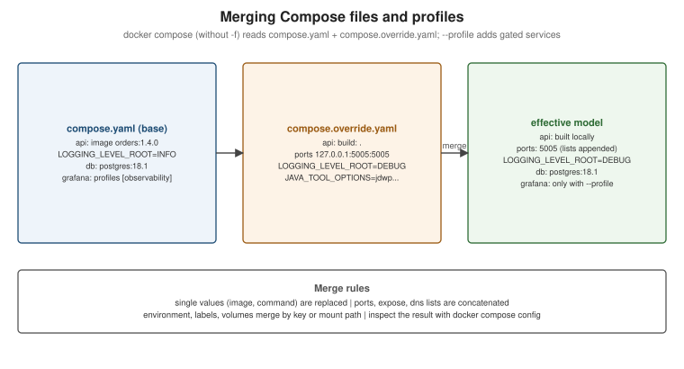

Compose in Practice
|
This content was generated with the assistance of AI and should be verified against the official documentation before being relied on in production. |
Docker Compose Fundamentals covers the application model and the
everyday CLI. This page covers what a team adds once a compose.yaml is shared: splitting and composing files,
optional services, a fast inner loop with Compose Watch, hooks, secrets, and the newer features — provider
services, models, Compose Bridge and OCI publishing. Everything here applies to Compose v5.5.x with Docker Desktop
4.91 or later or Docker Engine 29.8.x. How the Spring Boot services in this repository use Compose is on
Compose for Local Development.
Multiple Compose files
Compose can assemble one project from several files. There are three mechanisms:

-
Merge — pass several files with
-f; later files override earlier ones. Without-f, Compose readscompose.yamlandcompose.override.yamlautomatically. Single values (image,command) are replaced;ports,expose,dnsand similar lists are concatenated;environment,labelsandvolumesare merged by key or mount path. -
extends— a service inherits another service’s configuration, from the same or another file. -
include— imports another Compose file (local, Git oroci://) as a self-contained sub-project with its own relative paths; conflicts are errors rather than silent overrides.
# compose.yaml -- the base, committed
services:
api:
image: ghcr.io/myorg/orders-service:1.4.0
environment:
LOGGING_LEVEL_ROOT: INFO# compose.override.yaml -- applied automatically in development
services:
api:
build: .
ports:
- "127.0.0.1:5005:5005"
environment:
LOGGING_LEVEL_ROOT: DEBUG
JAVA_TOOL_OPTIONS: -agentlib:jdwp=transport=dt_socket,server=y,suspend=n,address=*:5005# compose.yaml of a service that reuses a shared infrastructure definition
include:
- path: ../platform/infra.compose.yaml
services:
api:
image: ghcr.io/myorg/orders-service:1.4.0
depends_on: [kafka]docker compose config # base + override, merged
docker compose -f compose.yaml -f compose.ci.yaml config # an explicit set (no automatic override)Derived from Use multiple Compose files, Merge, Extend and Include.
Profiles
A service with profiles: […] starts only when one of its profiles is active; services without profiles always
start. This keeps optional tooling in the same file:
services:
prometheus:
image: prom/prometheus:v3.6.0
profiles: ["observability"]
grafana:
image: grafana/grafana:12.2.0
profiles: ["observability"]docker compose --profile observability up -d
COMPOSE_PROFILES=observability,tools docker compose up -d
docker compose up -d grafana # naming a service activates its profile implicitlyDerived from Use service profiles.
Compose Watch
Compose Watch updates running services as you edit files, without bind mounts: sync copies changed files into the
container, rebuild rebuilds the image and recreates the container, sync+restart copies and then restarts the
container, and sync+exec copies and runs a command.
services:
web:
build: .
develop:
watch:
- action: sync
path: ./src/main/resources/static
target: /app/static
- action: sync+restart
path: ./config/application.yaml
target: /app/config/application.yaml
- action: rebuild
path: pom.xml
- action: rebuild
path: ./src/main/javadocker compose watch # or: docker compose up --watchDerived from Use Compose Watch and the
Compose Develop Specification (which documents
sync+exec, available since Compose 2.32). For Java, a rebuild rule on
sources is the simple, reliable choice; for faster reloads combine sync of compiled classes with Spring Boot
DevTools. Watch needs the image to contain the files' target directories and, for sync, a user that may write
them.
Lifecycle hooks and init containers
Hooks run commands in a service’s container around its lifecycle: post_start after it starts, pre_stop before
Compose stops it (not when it exits by itself). pre_start runs before the main container starts — either a
command in the service’s own image or a separate image — which is how Compose expresses init containers:
services:
api:
image: ghcr.io/myorg/orders-service:1.4.0
user: "10001:10001"
volumes:
- uploads:/data/uploads
pre_start:
- image: busybox:1.37
user: root
command: ["chown", "-R", "10001:10001", "/data/uploads"] # fix ownership before the app starts
post_start:
- command: ["/bin/sh", "-c", "echo started > /tmp/started"]
pre_stop:
- command: ["/bin/sh", "-c", "echo draining > /tmp/stopping"]
volumes:
uploads:Derived from Use lifecycle hooks and Use init containers. Database migrations are the classic init step; for Spring Boot services Flyway or Liquibase usually run inside the application instead.
Secrets and configs
Compose secrets are files mounted read-only at /run/secrets/<name> inside the services that request them. Unlike
environment:, they do not appear in docker inspect, in the process environment inherited by child processes,
or in logs that dump the environment:
services:
api:
image: ghcr.io/myorg/orders-service:1.4.0
secrets:
- db_password
environment:
SPRING_DATASOURCE_PASSWORD_FILE: /run/secrets/db_password # read by the app or an entrypoint script
configs:
- source: app_config
target: /app/config/application.yaml
secrets:
db_password:
file: ./secrets/db_password.txt # not committed; or environment: DB_PASSWORD to take it from a variable
configs:
app_config:
file: ./config/application.yamlDerived from Manage secrets securely in Docker Compose and
the configs reference. Spring Boot can read such files
directly with a config tree: spring.config.import=optional:configtree:/run/secrets/.
Provider services, GPUs and models
Provider services let Compose delegate a service to an external provider plugin instead of running a container — for example a managed database or a tunnel — while other services still depend on it by name:
services:
database:
provider:
type: awesomecloud # a Compose provider plugin available on the PATH
options:
type: mysql
app:
image: myapp:1.0
depends_on:
- databaseGPU access is requested as a device reservation:
services:
trainer:
image: nvidia/cuda:13.0.1-base-ubuntu24.04
command: nvidia-smi
deploy:
resources:
reservations:
devices:
- driver: nvidia
count: 1
capabilities: [gpu]Models declare AI models that Docker Model Runner serves to a service, which receives the endpoint and model name as environment variables:
services:
chat-app:
image: my-chat-app:1.0
models:
- llm
models:
llm:
model: ai/smollm2Derived from Use provider services, Enable GPU support and Define AI models in Docker Compose applications. Docker Model Runner itself is out of scope for this section.
Compose Bridge: from Compose to Kubernetes
Compose Bridge converts a Compose file into Kubernetes manifests (and a Kustomize overlay) using templates you can customise, which is a practical first step when a Compose-defined application has to move to Kubernetes:
docker compose bridge convert # writes ./out with Kubernetes manifests
kubectl apply -k out/overlays/desktop # deploy to Docker Desktop's Kubernetes clusterDerived from Overview of Compose Bridge and Use the default Compose Bridge transformation. See also Orchestration: Swarm Mode and Kubernetes.
Compose applications as OCI artifacts
A Compose application can be published to any OCI registry and run from there without cloning a repository:
docker compose publish myorg/orders-stack:1.4.0
docker compose -f oci://docker.io/myorg/orders-stack:1.4.0 up -dDerived from Package and deploy Docker Compose applications
as OCI artifacts. Environment variables are left out unless you pass --with-env, and Compose scans the
configuration for sensitive data and asks for confirmation before publishing anything that looks like a secret.
Compose in production — and the trust model
Compose runs happily on a single production host: keep a base compose.yaml and a compose.production.yaml
override that removes development bind mounts, sets restart: always, pins image digests and adds resource
limits, then deploy with docker compose -f compose.yaml -f compose.production.yaml up -d. Multi-host scheduling,
rolling updates and self-healing across machines are orchestrator territory (see
Orchestration). Derived from
Use Compose in production.
Compose treats every Compose file as trusted input: a file can request privileged: true, bind-mount /, or
mount the Docker socket, and Compose applies it exactly as docker run would. That also holds for files pulled in
through include or extends from Git or oci:// references. Review remote Compose files like code, pin remote
references to digests, and prefer local copies for anything that runs with privileges. Derived from
Compose trust model.